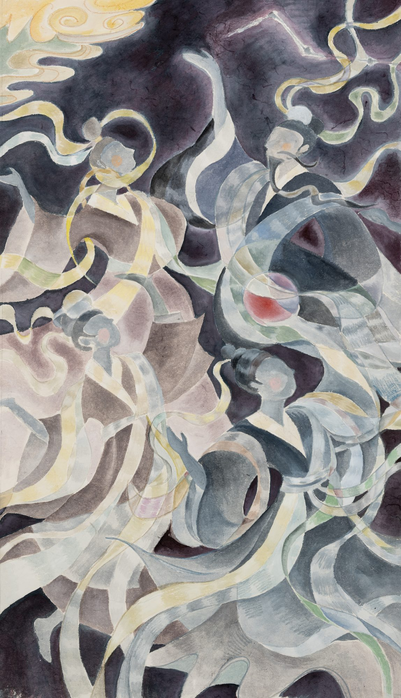
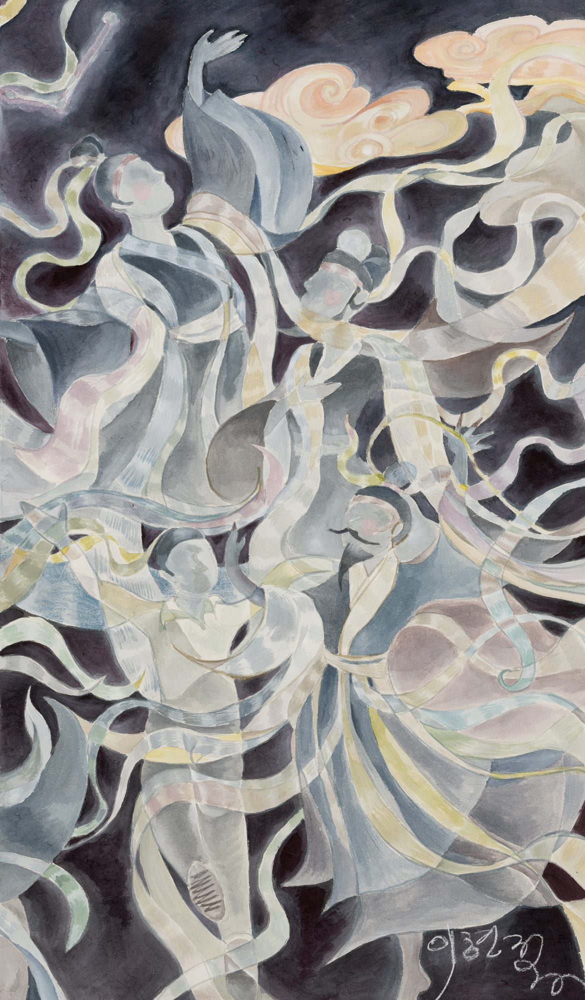

Dance of the Seven Stars: Joy of the Night Sky칠성무: 밤하늘의 환희



In an ink-deep night sky, beings wrapped in silvery robes gather in a circle and dance. One lifts her arms high, one turns, one leans toward another. Long silk ribbons coil among them and become curves of light, while golden clouds at both edges of the sky look on. Joining two panels side by side into one large picture, I laid the night in ink on lined Hanji paper and built up pale colors layer by layer so the figures glow, translucent as starlight. This painting began with a story told to me directly by my teacher. One night, the spirits of the Seven Stars rose into the sky one by one and began to dance, and my teacher danced along with them. I listened, holding my breath, and in that very moment the rapturous night sky unfolded above my head. Someone once said that the eternal silence of infinite spaces frightened him, but my teacher's night sky was not silent; it danced. Whether the story is true or not does not matter. The dazzling moment when the stars poured down the blessings of the universe passed from one person's lips into my heart and became this painting. That is how joy is passed on.
먹빛 깊은 밤하늘에 은빛 옷자락을 두른 존재들이 둥글게 모여 춤을 춘다. 팔을 높이 들어 올린 이, 몸을 돌리는 이, 서로에게 기댄 이. 길게 늘어진 비단 띠가 그들 사이를 휘감으며 빛의 곡선이 되고, 하늘 양쪽 끝에서는 금빛 구름이 그 춤을 지켜본다. 두 폭을 나란히 이어 하나의 큰 화면을 만들고, 배접한 한지에 먹으로 밤을 깔아 그 위에 옅은 채색을 겹겹이 올려 별빛처럼 투명하게 빛나도록 했다. 이 그림은 나의 스승님께 직접 들은 이야기에서 시작되었다. 어느 밤, 칠성님들이 하늘에 하나둘 떠오르더니 춤을 추기 시작했고, 스승님도 그 춤에 함께하셨다고 했다. 나는 숨을 죽이고 귀를 기울였고, 듣는 그 순간 머리 위로 그 황홀한 밤하늘이 펼쳐졌다. 무한한 공간의 영원한 침묵이 두렵다고 한 이도 있었지만, 스승님의 밤하늘은 침묵하지 않고 춤을 추었다. 그 이야기가 사실인지 아닌지는 중요하지 않다. 우주의 축복을 내리던 그 눈부신 순간이 한 사람의 입에서 내 마음으로 건너와 이렇게 그림이 되었다는 것. 기쁨은 그렇게 전해진다.